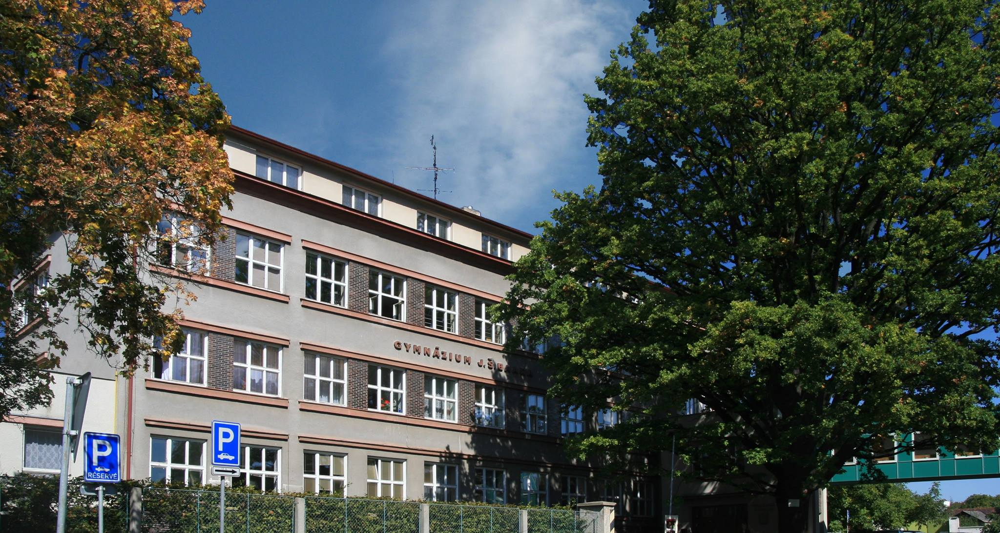

O semináři
O co jde
Přijďte s námi objevovat tajemství vesmíru a staňte se členy nového astronomického kroužku Keplerovi pátečníci! Kroužek je určen zejména pro studenty středních škol, ale vřele vítáme i zájemce z nižších ročníků (případně z širší veřejnosti), kteří se zajímají o astronomii a nebojí se občas něco spočítat. Obsahem kroužku budou vybraná témata z astronomie a fyziky, která se objevují v předmětových olympiádách, například Astronomická olympiáda. Bude kladen důraz na osvojování si nových znalostí počítáním problémových úloh. Znalost matematiky na úrovni základní školy je nezbytná, na úrovni střední školy je výhodou.
Kde a kdy se setkáváme
Budeme se scházet osobně i v online prostoru.
- Přednášky se budou konat na Gymnáziu Jindřicha Šimona Baara v Domažlicích, v učebně fyziky. 
- Pro zájemce, kteří se nebudou moci účastnit prezenčně, budou přednášky zároveň streamovány přes ZOOM.
Setkávání jsou nyní naplánovaná na následující dny (všechno pátky) v čase od 16 hod do 17 hod (max 17:30):
8.9., 22.9., 13.10., 27.10., 10.11., 24.11., 8.12., 22.12., 5.1., 19.1.
Ke každé přednášce bude zveřejněna sada úloh k samostatnému procvičení látky, přitom konkrétní den jejich zveřejnění se dá očekávat do pár dnů od konce přednášky.
Sylabus
Obsah přednášky
- Úvod, organizační záležitosti.
- Představení astronomie a astrofyziky jako oboru.
- Postavení člověka ve vesmíru.
- Historie a demografie vesmíru.
- Co za extrémní a exotické objekty lze najít.
- Začínáme: Kepler a Brahe v Praze aneb první astronomická revoluce!
- Tři Keplerovy zákony, vzorový příklad.
Obsah přednášky
- TBA - 2
Obsah přednášky
- TBA - 3
Obsah přednášky
- TBA - 4
Obsah přednášky
- TBA - 5
Obsah přednášky
- TBA - 6
Obsah přednášky
- TBA - 7
Obsah přednášky
- TBA - 8
Obsah přednášky
- TBA - 9
Obsah přednášky
- TBA - 10
Kontakt
Na setkání s Vámi se těší Pavel Kůs, doktorand na Fyzikálním ústavu AV ČR a spoluorganizátor Astronomické olympiády.
E-mail: keplerovipatecnici@gmail.com